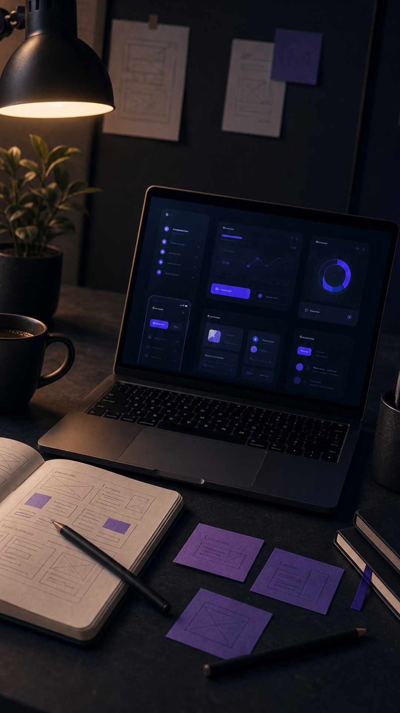

Interface analytics · Dashboard RH
Conception d’une interface analytics pour un outil RH, pensée pour centraliser les indicateurs clés et permettre une lecture rapide des données par des profils non techniques.
Un dashboard trop dense
Le dashboard initial présentait un volume important d’informations, avec une hiérarchie peu lisible. L’enjeu était de rendre les données compréhensibles sans expertise analytique, tout en gardant la richesse des indicateurs.
Concevoir par hiérarchie
J’ai retravaillé la structure visuelle pour faire ressortir les KPI essentiels en premier, regrouper les données par intention, simplifier les libellés et rendre les actions plus évidentes.

Une interface actionnable
Le résultat est un dashboard plus clair, plus lisible et plus utile au quotidien, capable d’aider les équipes RH à comprendre les tendances, repérer les points d’attention et prendre des décisions plus vite.